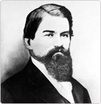
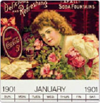
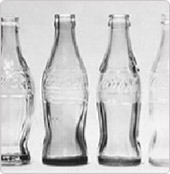
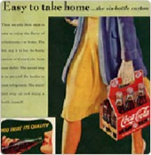
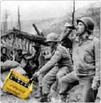
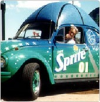
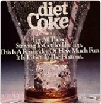
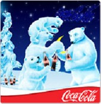
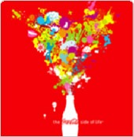

코카콜라 원액의 탄생 1886'~1892'

1886년 뉴욕시의 항구.
미국의 상징인 자유의 여신상이 그 자태를 갖추고 있을 즈음 그곳으로부터 800마일 정도 떨어진 다른 지점에서는 또 하나의 미국의 상징이 세상에 막 모습을 드러내려 하고 있었습니다. 역사의 흐름을 바꾼 여러 위인들처럼 남북전쟁 참전용사이자 아틀랜타의 약사였던 존 펨버턴 역시 단순한 호기심에서 영감을 얻었습니다.펨버턴은 여러 가지 약제들을 조합하는 것을 무척이나 즐기는 사람이었는데 어느날 오후 두통을 경감시킬 응급제를 찾던 중 그의 냄비 안에서 캐러멜 색의 향기로운 액체를 섞어내게 되었습니다. 그는 이 액체가 완성되자 이웃의 자콥 약국으로 가지고 갔습니다.그곳에서 혼합액에 탄산수를 더한 후 약국의 손님들에게 시범으로 맛을 보게 했습니다. 손님들은 모두 이구동성으로 이 새로운 음료는 뭔가 특별하다는 평을 내렸습니다. 따라서 자콥 약국에서는 이 음료수를 한 잔에 5센트로 시판하기 시작했습니다. 펨버턴의 회계 담당자였던 프랭크 로빈슨은 이 혼합물에 코카-콜라라는 이름을 붙여 그의 독특한 필체로 적었습니다. 오늘날까지 코카-콜라는 그가 썼던 그대로 전세계에 판매되고 있습니다.
코카-콜라가 대중에게 선을 보인 첫해 코카-콜라는 약 하루 9잔 정도로 판매되었습니다. 그로부터 백 년 후 코카-콜라사는 일년에 거의 400리터의 원액을 생산하고 있습니다. 아쉽게도 펨버턴은 발명가이지 사업가는 아니었습니다. 또 그가 발명한 것이 세계적으로 가장 사랑 받는 제품 중 하나가 될 것이라는 사실을 전혀 짐작하지 못했습니다. 1888년에서 1891년 사이에 펨버턴은 자신의 사업을 모두 합쳐 약 $2,300에 아사 캔들러라는 아틀랜타 사업가에게 넘겨 주었습니다. 캔들러는 코카-콜라사 첫번째 사장이자 코카-콜라사와 브랜드에 실제적인 비전을 부여한 최초의 사람이 되었습니다.
사업으로의 변신! 3억잔 판매 돌파 1893'~1904'

천부적인 사업가였던 아사 캔들러는 코카-콜라를 단순한 발명품에서 하나의 사업으로 변신시켰습니다. 그는 시장에 갈증을 느끼는 소비자들이 존재한다는 사실을 잘 알고 있었습니다. 캔들러는 그러한 소비자들에게 이 새롭고 흥미로운 음료를 소개하는 재기에 넘치며 혁신적인 방법을 고안해 내었습니다. 그는 사람들에게 무료로 코카-콜라를 한번 시음해볼 수 있는 쿠폰을 나누어 주었고, 코카-콜라를 배급하는 약국에는 코카-콜라 상표가 달린 시계, 단지, 달력 등을 주었습니다. 사람들은 자연스럽게 어디에서나 코카-콜라를 보게 되었고 이러한 적극적인 홍보는 그에 따른 결실을 보게 되었습니다. 1895년 캔들러는 코카-콜라 원액 제조 공장을 시카고와 달라스, 로스엔젤레스에 세웠습니다. 코카-콜라가 이와 같은 인기를 얻게 됨에 따라 자연적으로 이 음료를 보다 새로운 방식으로 즐기고자 하는 수요가 형성되게 되었습니다. 1894년 조셉 비데한이라는 사업가는 최초로 코카-콜라를 병에 담아 시판했습니다. 그는 12개의 병에 코카-콜라를 담아 캔들러에게 보냈으나 그로부터 이렇다 할 반응을 얻어내지 못했습니다. 비록 캔들러가 명석하고 혁신적인 사업가였지만 그는 코카-콜라 성공의 핵심은 고객들이 어디든 가지고 다닐 수 있는 병에 담긴 음료라는 점에 있다는 것을 미처 깨닫지 못했던 것입니다. 그는 5년 후인 1899년 두 명의 채터누가시의 변호사인 벤자민 에프 토마스와 조셉 비 와이트헤드가 총 1달러에 코카-콜라를 병에 담에 판매할 독점권을 취득할 때까지 그 핵심을 여전히 파악하지 못하고 있었습니다.
모조품의 등장, 컨투어병의 탄생 1905'~1918'

브랜드에 대한 모조품이 떠돈다는 사실은 어찌 보면 브랜드의 성공에 대한 증거로 기분 좋은 일일지도 모릅니다. 그러나 코카-콜라사는 코카-콜라의 성공을 이용하려는 가짜 음료들의 성행을 그저 반길 수만은 없었습니다.
코카-콜라는 훌륭한 제품이자 훌륭한 브랜드이며 이 두 가지 모두 보호되어야만 했습니다. 이 시기의 코카-콜라 광고는 진짜 코카-콜라라는 면모에 초점을 맞추어 소비자들에게 "진짜를 드십시오", "모조품을 거부하십시오"라는 메시지를 촉구했습니다. 뿐만 아니라 코카-콜라사는 코카-콜라만의 독특한 병 모양을 고안하여 사람들이 진짜 코카-콜라를 식별할 수 있도록 했습니다.
1916년 인디아나주의 테러호트사의 루트 글래스 사에서 그 유명한 코카-콜라 병을 생산해내기 시작했습니다. 오늘날까지 코카-콜라를 특징짓는 이 병은 사람들의 눈을 끄는 모양과 독창적인 모양으로 어둠 속에서도 진품을 가려낼 수 있도록 고안되었습니다.
새로운 세기에 접어들면서 코카-콜라사는 날로 성장하여 쿠바, 푸에르토리코, 프랑스 및 다른 국가들과 여타 미국령으로 전파되었습니다. 1900년에 코카-콜라 제조업체는 겨우 두 군데에 불과했습니다. 1920년에 이르자 약 1,000개 이상의 음료 제조업체에서 코카-콜라를 생산하게 되었습니다.
마케팅의 천재 우드러프 사장의 활약 1919'~1940'

아마도 코카-콜라사의 역사에서 우드러프만큼 커다란 영향을 미친 사람은 없을 것입니다. 우드러프는 1923년 그의 아버지 어네스트가 코카-콜라사를 아사 캔들러로부터 매입한 지 5년 후 아버지의 뒤를 이어 코카-콜라 사장직을 맡게 되었습니다. 캔들러가 미국에 코카-콜라를 선보였다면 우드러프는 코카-콜라의 대표로서 거의 60년 이상을 전세계에 코카-콜라를 알리는 일에 전념했습니다. 우드러프는 어디서나 사업 확장의 기회를 발견했던 마케팅의 천재였습니다. 그는 혁신적인 광고와 홍보활동을 통해 전세계의 사람들의 마음을 사로잡았습니다. 코카-콜라는 1928년 암스테르담 올림픽에서 미국 대표 선수단과 함께 했고, 코카-콜라 로고는 캐나다의 개 썰매 경기와 스페인의 투우장의 벽을 장식했습니다. 우드러프는 코카-콜라의 6개들이 상자와 개방형 냉각기 등 여러 혁신적인 발명품들을 개발하여 유통시킴으로써 사람들이 코카-콜라를 보다 쉽게 즐길 수 있도록 했습니다. 또한 주부들이 집에서 쉽게 마개를 딸 수 있는 코카-콜라 6개들이 한 상자를 사는 경향이 있다는 것이 분명해지자 여성들을 파견하여 집집마다 돌아다니며 코카-콜라 브랜드가 찍힌 병따개를 배포하도록 했습니다. 이러한 ""상자 속에서 벗어나기""식의 사고 방식은 바로 그 시대에 코카-콜라사를 이끈 우드러프의 리더쉽이 반영된 것으로 코카-콜라가 단순한 엄청난 성공작에 그치지 않고 사람들의 삶의 일부로 자리 잡도록 만든 요인이었습니다.
전쟁의 위기를 기회로! 유럽으로의 판매망 확대1941'~1959'

1941년 미국은 제 2차 세계대전에 참전하게 되었습니다. 우드러프는 "회사에 얼마나 부담이 되건 간에, 어디서든 코카-콜라 한 병을 5센트에 마실 수 있다"는 비전을 세웠습니다. 1943년 드와이트 아이젠하워 총사령관은 코카-콜라사의 긴급 전보를 보내 해외에 10개의 코카-콜라 현지 생산공장을 짓도록 요청했습니다. 전쟁이 계속되는 동안 많은 유럽인들이 코카-콜라를 처음 접하게 되었으며 마침내 전쟁이 종결되자 코카-콜라의 판매망은 유럽 각지로 확대되게 되었습니다. 40년대 중반에서 1960년까지 코카-콜라 제조업체의 수는 거의 두 배로 증가했습니다. 종전 후 미국은 낙관주의와 경제적 번영에서 오는 활기로 충만했습니다. 코카-콜라는 즐겁고 유쾌한 생활 양식의 일부가 되었으며 코카-콜라의 광고에 사용되었던 이미지는 그 시대의 정신을 그대로 반영하는 것이었습니다.
전세계 시장으로의 확대, 새 브랜드의 출시 1960'~1981'

코카-콜라 브랜드의 75년간의 경이적인 성공 이후, 코카-콜라사는 스프라이트(1961년), 터부(1963년), 프레스카(1966년)와 같은 새로운 브랜드를 출시하였습니다. 코카-콜라사는 매년 전세계적으로 빠른 성장을 보였으며 캄보디아, 몬트리올, 파라과이, 마카오, 터키 외에 다수의 국가에 자리잡게 되었습니다. 코카-콜라 사업에서 항상 중요한 부분이었던 코카-콜라 광고는 70년대에 이르자 코카-콜라라는 브랜드를 전적으로 즐거움 그리고 자유와 연계하는 명실상부한 국제 코카-콜라 사업의 일환으로 자리잡게 되었습니다. 코카-콜라의 국제적인 성격은 1971년 광고를 통해 엿볼 수 있는데 그 내용은 전세계의 젊은이들이 이탈리아의 언덕 꼭대기에 한데 어울려 "전 세계에 콜라로 한턱 내련다."는 노래를 부른다는 것입니다. 1978년 코카-콜라사는 포장 청량 음료를 중국에 시판하도록 허가 받은 유일한 회사가 되었습니다.
다이어트 코-크의 성공, 뉴 코-크의 도전 1982'~1989'

그가 "지적 모험"이라 부른 새로운 전략을 통해 코카-콜라를 전면 재조정했습니다. 그의 과감한 개혁 중 하나는 수많은 미국 코카-콜라 제조 사업을 코카-콜라 주식회사라는 하나의 주식회사로 전환 시키는 것이었습니다. 또한 다이어트 코-크를 출시하여 코카-콜라 상표 내에서 최초로 브랜드를 확장했습니다. 다이어트 코-크는 2년 만에 전세계에서 가장 인기있는 저칼로리 음료로 성장하여 코카-콜라에 버금가는 성공을 이루었습니다. 1985년 고이주에타 회장이 착수한 또 하나의 과제는 바로 코카-콜라의 맛을 혁신하는 것이었습니다. 99년 동안 이어온 코카-콜라 제조법에 대한 최초의 변화가 이루어졌습니다. 눈을 가리고 시행한 시음 테스트에서 사람들은 이 새로운 맛을 환영했습니다. 그러나 실제 세상에서 사람들은 코카-콜라의 원래의 맛에 대한 감정으로 깊은 유대감을 가지고 있었으며 코카-콜라의 맛을 되돌려 달라는 요청이 쇄도하게 되었습니다. 비평가들은 이 사건을 최고의 마케팅 실수라 부르기도 하였습니다. 그러나 고이주에타 회장은 성공한 투자가인 웨렌버핏씨가 일찍이 평했듯이 "레몬을 레모네이드로 바꿀 줄 아는" 사람이었습니다. 결국 코카-콜라사는 코카-콜라 클래식이라는 이름으로 원래의 맛의 코카-콜라를 복귀시켰습니다. 그리고 코카-콜라 클래식의 판매는 경쟁 제품을 제치기 시작하여 오늘날까지 시장에서 선두를 점하고 있습니다.
새로운 시장과 브랜드 1990'~1999'

1990년대는 코카-콜라사의 지속적인 성장이 두드러진 시기입니다. 올림픽, FIFA 월드컵, 럭비 월드컵, 그리고 NBA 농구와 같이 다양한 스포츠 행사를 지원하며 스포츠와의 연계가 더욱 강화된 시기이기도 합니다. 또한 빠르게 성장하고 가장 인기있는 스포츠 중 하나인 NASCAR 레이싱의 공식 지정 음료가 되기도 하였습니다. 1993년에는 '언제나 코카-콜라'라는 새로운 캠페인을 시작하며 사랑스러운 코카-콜라 북극곰이 태어난 의미 있는 해입니다. 1990년의 동독은 물론 1993년 인도같이 새로운 시장에서도 코카-콜라 제품이 팔리기 시작했습니다. 또한 스포츠 음료 파워에이드, 어린이 과즙 음료 쿠우, 물 브랜드 다사니 같은 새로운 제품이 소개되었습니다. 인도의 Limaca, Maaza 그리고 Thums Up 브랜드, 미국의 루트비어 Barq's 브랜드, 페루의 Inca Kola, 그리고 Cadbry Schweppes 브랜드 등 세계 120개 넘는 나라에서 여러 브랜드를 인수하며 활동 영역을 넓혀 나갔습니다. 1997년에는 회사 일 판매가 10억 개의 음료가 넘음에도 불구하고 항상 새로운 시장의 기회를 찾기 위해 노력하였습니다.
새로운 시장과 브랜드 2000'~2008'

1886년 아틀란타의 한 작은 약국에서 사람들의 기분을 상쾌하게 해주던 코카-콜라. 어느덧 그 두 번째 백 년에 접어들었습니다. 코카-콜라의 목표는 고객들의 400여 가지의 코카-콜라 제품을 마실 때마다 놀라운 마법을 가져다 드리는 것입니다. 보스턴과 부다페스트 그리고 바레인에 이르기까지 세계 방방곡곡에는 암바사, 베지타베타, 프레스콜리타 같은 코카-콜라 제품을 애용하는 수많은 코카-콜라 팬들이 있습니다. 세계의 어떤 오지에서도 여러분은 코카-콜라를 발견하실 수 있습니다. 코카-콜라는 세계 각지의 시장에서, 서로 다른 문화와 배경을 가지고 있는 서로 다른 사람들이 무엇을 마시고 싶어하며, 어디서 그리고 또 어떻게 마시고 싶어하는지 세심한 주의를 기울이며 노력하고 있습니다. 보틀링 협력업체들과 함께, 코카-콜라는 코카-콜라를 이용하는 모든 이들에게 도움을 주며 즐겁게 해주기 위해 존재한다는 신념을 가지고, 세계 각 지역의 공동체와 하나가 되기 위해 노력하고 있습니다. 하루에 단 아홉 병을 팔던 초창기에서, 이제 코카-콜라는 하루에 14억 개의 음료를 판매하는 세계에서 가장 널리 알려진 브랜드로 자리 잡았습니다. 고객이 코카-콜라의 제품 중 하나를 선택했을 때, 코카-콜라는 고객의 선택이 언제나 신나고 만족스럽기를 기원합니다.